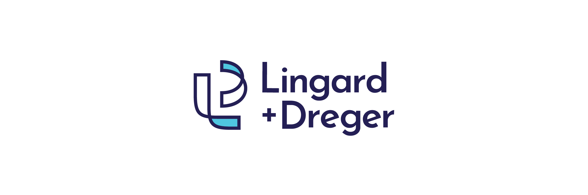
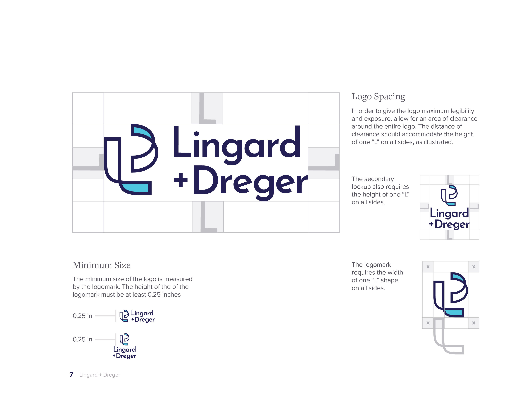
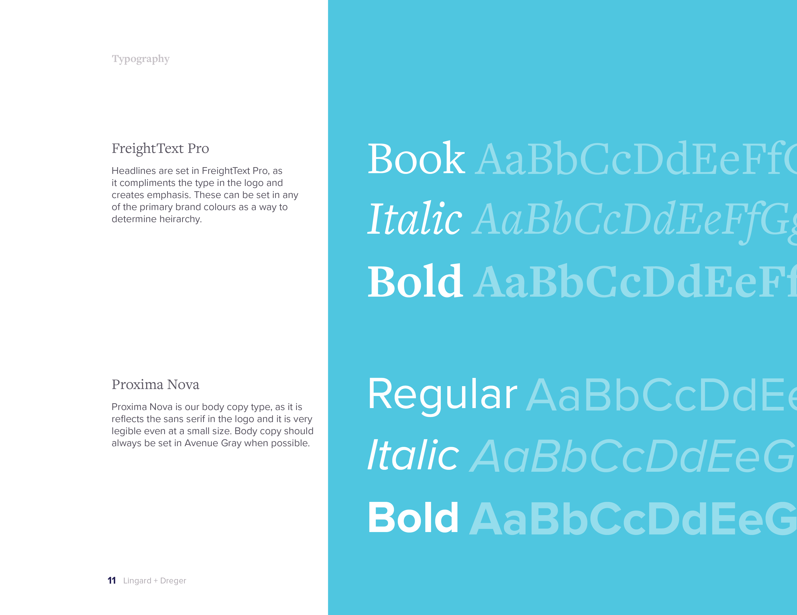
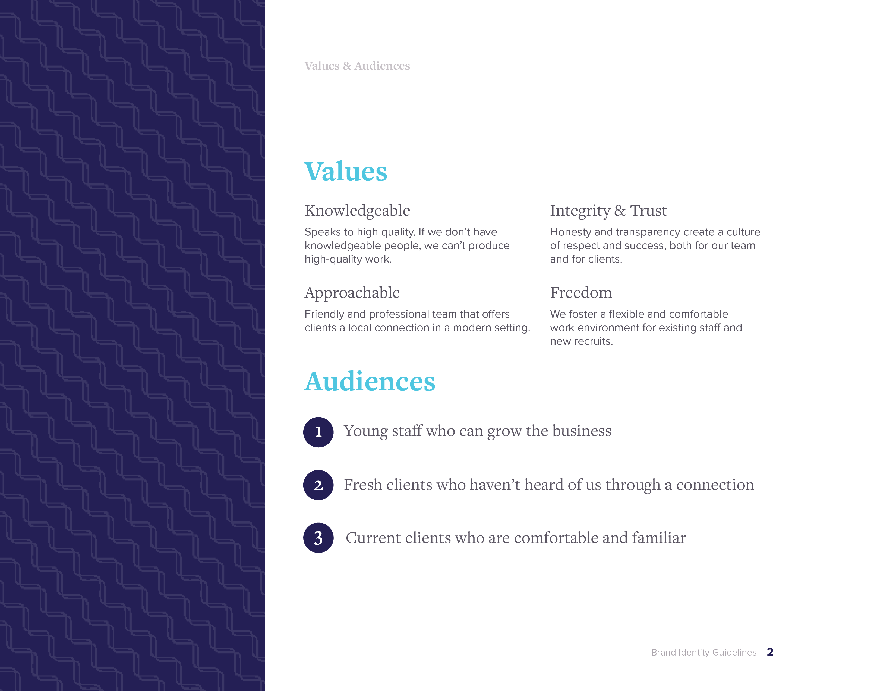
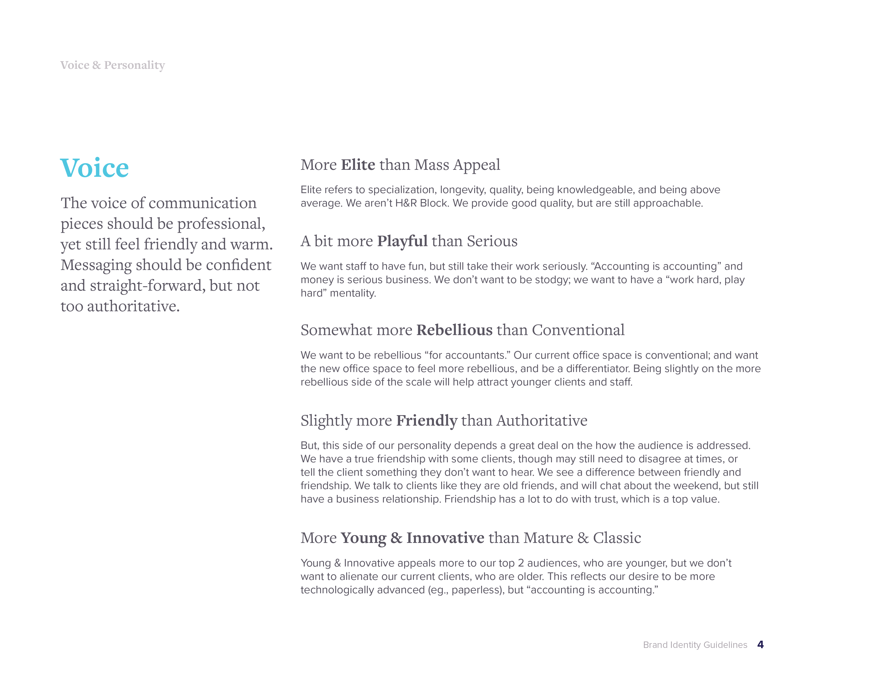
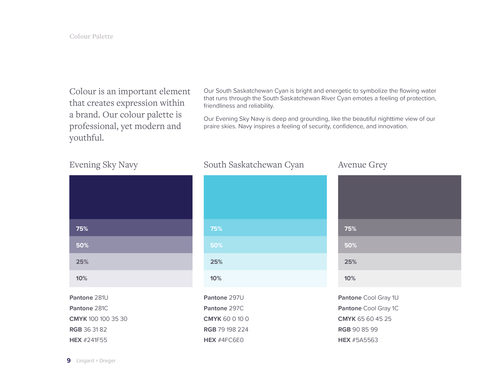
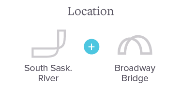
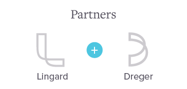

Formerly Twigg & Co., this accounting firm had roots in Saskatoon since the '70s and was going through a transitional period — introducing two new partners, moving to a new building on Broadway, and looking to attract new talent and clients. It was the perfect time for a rename and rebrand.

Rather than starting with logo concepts, I led the partners through a brand sprint — working sessions to align on mission, vision, values, and personality before any design began. For a partnership finding its footing, this did as much strategic work as creative. The name, mark, and website that followed were grounded in real consensus, not one person's taste.





For the visual identity, I drew on Saskatoon itself, the sweep of the Broadway Bridge and the curve of the South Saskatchewan River, both visible from the firm's new building, this lent itself perfectly to the space of a "L" and "D" when placed on their sides. I carried it through a full guidelines document (logo usage, colour, type, voice) so the partners had a system to grow with.
The website was the brand's first real-world proof point where a prospective client or hire would decide whether the firm matched its new, confident story. I led the UX and visual design, shaping a site that spoke to both audiences at once, clients evaluating trust, candidates evaluating a career.

